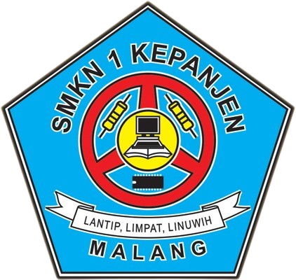

|  |
SMK NEGERI 1 KEPANJEN |
Profile Sekolah | Profile Jurusan | Pendaftaran |
Selama kamu sekolah di jurusan RPL, kamu akan belajar berbagai hal seperti membuat website menggunakan HTML, CSS, dan JavaScript, membangun aplikasi Android, mengelola database, serta merancang sistem agar
aplikasi yang kamu buat bisa berjalan dengan baik. Tidak cuma teori, kamu juga akan banyak praktek langsung di komputer. Bahkan, kamu akan mengerjakan proyek-proyek nyata seperti membuat aplikasi kasir,
sistem informasi sekolah, atau aplikasi lainnya. Selain itu, di kelas 11 semester 2 sampai kelas 12 semester 1, kamu juga akan melakukan PKL (Praktek Kerja Lapangan) untuk mendapatkan pengalaman kerja secara langsung.
Belajar di jurusan RPL juga mengasah kemampuan berpikir logis dan kreatif. Kamu akan terbiasa menyelesaikan masalah, memperbaiki bug dalam program, dan terus belajar hal-hal baru
di dunia teknologi yang cepat berubah. Setelah lulus, peluang kerjanya juga sangat luas. Kamu bisa bekerja sebagai programmer, web developer, pembuat aplikasi, teknisi IT, atau bahkan jadi freelancer yang
kerja dari rumah. Kalau kamu suka komputer, suka ngulik, atau penasaran gimana cara kerja aplikasi, jurusan RPL bisa jadi pilihan yang tepat buat kamu.